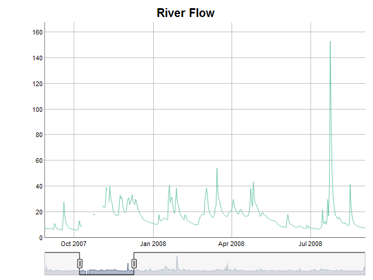

This vignette introduces the DTSg package, shows how to
create objects of its main as well as only class and explains their two
interfaces: R6 as code and S3 in comments. Familiarity with the
data.table package helps better understanding certain parts
of the vignette, but is not essential to follow it.
First, let’s load some data. The package is shipped with a
data.table containing a daily time series of river
flows:
library(data.table)
library(DTSg)
data(flow)
flow
#> date flow
#> <POSc> <num>
#> 1: 2007-01-01 9.540
#> 2: 2007-01-02 9.285
#> 3: 2007-01-03 8.940
#> 4: 2007-01-04 8.745
#> 5: 2007-01-05 8.490
#> ---
#> 2165: 2012-12-27 26.685
#> 2166: 2012-12-28 28.050
#> 2167: 2012-12-29 23.580
#> 2168: 2012-12-30 18.840
#> 2169: 2012-12-31 17.250
summary(flow)
#> date flow
#> Min. :2007-01-01 00:00:00.0 Min. : 4.995
#> 1st Qu.:2008-07-19 00:00:00.0 1st Qu.: 8.085
#> Median :2010-01-12 00:00:00.0 Median : 11.325
#> Mean :2010-01-08 23:32:46.7 Mean : 16.197
#> 3rd Qu.:2011-07-08 00:00:00.0 3rd Qu.: 18.375
#> Max. :2012-12-31 00:00:00.0 Max. :290.715Now that we have a data set, we can create our first object by
providing it to the new() method of the package’s main R6
class generator DTSg. In addition, we specify an ID in
order to give the object a name:
TS <- DTSg$new(
values = flow,
ID = "River Flow"
)Creating an object with the package’s alternative interface abusing an S4 constructor looks like this:
TS <- new(
Class = "DTSg",
values = flow,
ID = "River Flow"
)Printing the object shows us, among others, the data provided, the specified ID and that the object represents a regular UTC time series with a periodicity of one day and 2192 timestamps. It also shows us that the first column has been renamed to .dateTime. This column serves as the object’s time index and cannot be changed at will:
TS$print() # or 'print(TS)' or just 'TS'
#> Values:
#> .dateTime flow
#> <POSc> <num>
#> 1: 2007-01-01 9.540
#> 2: 2007-01-02 9.285
#> 3: 2007-01-03 8.940
#> 4: 2007-01-04 8.745
#> 5: 2007-01-05 8.490
#> ---
#> 2188: 2012-12-27 26.685
#> 2189: 2012-12-28 28.050
#> 2190: 2012-12-29 23.580
#> 2191: 2012-12-30 18.840
#> 2192: 2012-12-31 17.250
#>
#> ID: River Flow
#> Aggregated: FALSE
#> Regular: TRUE
#> Periodicity: Time difference of 1 days
#> Missing values: explicit
#> Time zone: UTC
#> Timestamps: 2192With this done, we can move on and further explore our newly created
time series data object with a summary (summary()), a
report on missing values (nas()) and a plot
(plot()). It suddenly seems to contain several missing
values, which apparently were not there upon loading the data set
(plot() requires the dygraphs and
RColorBrewer packages to be installed; HTML vignettes
unfortunately cannot display interactive elements, hence I included a
static image of the JavaScript chart instead):
TS$summary() # or 'summary(TS)'
#> flow
#> Min. : 4.995
#> 1st Qu.: 8.085
#> Median : 11.325
#> Mean : 16.197
#> 3rd Qu.: 18.375
#> Max. :290.715
#> NA's :23
TS$nas(cols = "flow") # or 'nas(TS, cols = "flow")'
#> .col .group .from .to .n
#> <char> <int> <POSc> <POSc> <int>
#> 1: flow 1 2007-10-12 2007-10-24 13
#> 2: flow 2 2007-10-26 2007-11-03 9
#> 3: flow 3 2007-11-10 2007-11-10 1
if (requireNamespace("dygraphs", quietly = TRUE) &&
requireNamespace("RColorBrewer", quietly = TRUE)) {
TS$plot(cols = "flow") # or 'plot(TS, cols = "flow")'
}
Looking at the original data set reveals that the missing values
implicitly already were there. Putting the data set into the object
simply expanded it to the automatically detected periodicity and made
them explicit (this behaviour can be changed, however, DTSg
objects work best with explicitly missing values):
flow[date >= as.POSIXct("2007-10-09", tz = "UTC") & date <= as.POSIXct("2007-11-13", tz = "UTC"), ]
#> date flow
#> <POSc> <num>
#> 1: 2007-10-09 9.180
#> 2: 2007-10-10 9.075
#> 3: 2007-10-11 9.000
#> 4: 2007-10-25 18.150
#> 5: 2007-11-04 25.350
#> 6: 2007-11-05 23.550
#> 7: 2007-11-06 23.400
#> 8: 2007-11-07 26.400
#> 9: 2007-11-08 39.150
#> 10: 2007-11-09 37.200
#> 11: 2007-11-11 27.450
#> 12: 2007-11-12 39.750
#> 13: 2007-11-13 31.350For fairly small gaps like this it might be okay to fill them by
means of linear interpolation. Using the colapply() method
together with the interpolateLinear() function will do the
trick:
TS <- TS$colapply(fun = interpolateLinear)
# or 'colapply(TS, fun = interpolateLinear)'
TS$nas()
#> Empty data.table (0 rows and 5 cols): .col,.group,.from,.to,.nIn case no column name is provided through the cols
argument of the colapply() method, the first numeric column
is taken by default. Column names for the cols argument can
be requested from DTSg objects with the help of the
cols() method. It, among others, supports a
class and/or pattern argument:
TS$cols() # or 'cols(TS)'
#> [1] "flow"
TS$cols(class = "numeric") # or 'cols(TS, class = "numeric")'
#> [1] "flow"
TS$cols(class = "character")
#> character(0)
TS$cols(class = c("double", "integer")) # class of column flow is numeric
#> character(0)
TS$cols(pattern = "f.*w") # or 'cols(TS, pattern = "f.*w")'
#> [1] "flow"
TS$cols(pattern = "temp")
#> character(0)The time series reaches from the start of the year 2007 to the end of
the year 2012. Let’s say we are only interested in the first two years.
With alter() we can shorten, lengthen and/or change the
periodicity of a DTSg object. The latter can be achieved
through its by argument (no example given):
TS <- TS$alter(from = "2007-01-01", to = "2008-12-31")
# or 'alter(TS, from = "2007-01-01", to = "2008-12-31")'
TS
#> Values:
#> .dateTime flow
#> <POSc> <num>
#> 1: 2007-01-01 9.540
#> 2: 2007-01-02 9.285
#> 3: 2007-01-03 8.940
#> 4: 2007-01-04 8.745
#> 5: 2007-01-05 8.490
#> ---
#> 727: 2008-12-27 18.180
#> 728: 2008-12-28 16.575
#> 729: 2008-12-29 13.695
#> 730: 2008-12-30 12.540
#> 731: 2008-12-31 11.940
#>
#> ID: River Flow
#> Aggregated: FALSE
#> Regular: TRUE
#> Periodicity: Time difference of 1 days
#> Missing values: explicit
#> Time zone: UTC
#> Timestamps: 731In order to get mean monthly river flows as an example, we can use
the aggregate() method with one of the package’s temporal
aggregation level functions (TALFs) as its funby argument
(the fun argument also accepts a named character vector or
list of functions, which allows for calculating several
summary statistics at once):
TSm <- TS$aggregate(funby = byYm____, fun = mean)
# or 'aggregate(TS, funby = byYm____, fun = mean)'
TSm
#> Values:
#> .dateTime flow
#> <POSc> <num>
#> 1: 2007-01-01 25.281290
#> 2: 2007-02-01 14.496964
#> 3: 2007-03-01 12.889839
#> 4: 2007-04-01 12.470500
#> 5: 2007-05-01 9.233226
#> ---
#> 20: 2008-08-01 12.641129
#> 21: 2008-09-01 13.710500
#> 22: 2008-10-01 10.626774
#> 23: 2008-11-01 8.902000
#> 24: 2008-12-01 16.435645
#>
#> ID: River Flow
#> Aggregated: TRUE
#> Regular: FALSE
#> Periodicity: 1 months
#> Min lag: Time difference of 28 days
#> Max lag: Time difference of 31 days
#> Missing values: explicit
#> Time zone: UTC
#> Timestamps: 24Printing the aggregated object shows us that its
aggregated field has been set to TRUE. This is
merely an indicator telling us to now interpret the timestamps of the
series as periods between subsequent timestamps and not as snap-shots
anymore.
The one family of temporal aggregation level functions of the package sets timestamps to the lowest possible point in time of the corresponding temporal aggregation level, i.e. truncates timestamps, and the other family extracts a certain part of them. An example is given for quarters below. By convention, the year is set to 2199 in the latter case:
TSQ <- TS$aggregate(funby = by_Q____, fun = mean)
# or 'aggregate(TS, funby = by_Q____, fun = mean)'
TSQ
#> Values:
#> .dateTime flow
#> <POSc> <num>
#> 1: 2199-01-01 18.46127
#> 2: 2199-04-01 12.95266
#> 3: 2199-07-01 13.48924
#> 4: 2199-10-01 15.84620
#>
#> ID: River Flow
#> Aggregated: TRUE
#> Regular: FALSE
#> Periodicity: 3 months
#> Min lag: Time difference of 90 days
#> Max lag: Time difference of 92 days
#> Missing values: explicit
#> Time zone: UTC
#> Timestamps: 4Additional temporal aggregation level functions exist for years,
days, hours, minutes and seconds. Furthermore, the temporal aggregation
level of certain temporal aggregation level functions can be adjusted
via the multiplier argument of the aggregate()
as well as other methods, e.g. multiplier = 6 makes
byYm____ aggregate to half years instead of months.
The last thing we want to achieve for now is the calculation of
moving averages for a window of two time steps before and after each
timestamp. We can do so with the help of the rollapply()
method:
TSs <- TS$rollapply(fun = mean, na.rm = TRUE, before = 2, after = 2)
# or 'rollapply(TS, fun = mean, na.rm = TRUE, before = 2, after = 2)'
TSs
#> Values:
#> .dateTime flow
#> <POSc> <num>
#> 1: 2007-01-01 9.2550
#> 2: 2007-01-02 9.1275
#> 3: 2007-01-03 9.0000
#> 4: 2007-01-04 8.7720
#> 5: 2007-01-05 8.5710
#> ---
#> 727: 2008-12-27 19.3080
#> 728: 2008-12-28 16.4520
#> 729: 2008-12-29 14.5860
#> 730: 2008-12-30 13.6875
#> 731: 2008-12-31 12.7250
#>
#> ID: River Flow
#> Aggregated: FALSE
#> Regular: TRUE
#> Periodicity: Time difference of 1 days
#> Missing values: explicit
#> Time zone: UTC
#> Timestamps: 731On a side note, some of the methods, which take a function as an
argument (colapply() and rollapply()) hand
over to it an additional list argument called
.helpers containing useful data for the development of user
defined functions (please see the respective help pages for further
information). This can of course be a problem for functions like
cumsum(), which do not expect such a thing. A solution to
this is to set the helpers argument of the respective
method to FALSE.
With this said, let’s join the result of the last calculation to the
original time series data object and extract its values as a
data.table for further processing in a final step (please
note that the .dateTime column gets its original name
back):
TS <- TS$merge(y = TSs, suffixes = c("_orig", "_movavg"))
# or 'merge(TS, y = TSs, suffixes = c("_orig", "_movavg"))'
TS$values()
#> Key: <date>
#> date flow_orig flow_movavg
#> <POSc> <num> <num>
#> 1: 2007-01-01 9.540 9.2550
#> 2: 2007-01-02 9.285 9.1275
#> 3: 2007-01-03 8.940 9.0000
#> 4: 2007-01-04 8.745 8.7720
#> 5: 2007-01-05 8.490 8.5710
#> ---
#> 727: 2008-12-27 18.180 19.3080
#> 728: 2008-12-28 16.575 16.4520
#> 729: 2008-12-29 13.695 14.5860
#> 730: 2008-12-30 12.540 13.6875
#> 731: 2008-12-31 11.940 12.7250Better ways to add results of the colapply() or
rollapply() method as new column(s) are actually their
resultCols and suffix arguments. Their use
would not have allowed for demonstrating the merge() method
though.
For a full explanation of all the methods and functions available in the package as well as their arguments please consult the help pages. Especially the following methods and functions have not been discussed in this vignette:
The fields of a DTSg object of which the metadata are
part of can be accessed through so called active bindings:
TS$ID
#> [1] "River Flow"Valid results are returned for the following fields:
aggregatedfastfunbyApproachIDna.statusparameterperiodicityregulartimestampstimezoneunitvariantA subset of this fields can also be actively set (please note that reference semantics always apply to fields, hence the “largely” in the title of the package):
# two new `DTSg` objects in order to demonstrate reference semantics, which are
# propagated by assignments and broken by deep clones
TSassigned <- TS
TScloned <- TS$clone(deep = TRUE) # or 'clone(x = TS, deep = TRUE)'
# set new ID
TS$ID <- "Two River Flows"
TS
#> Values:
#> .dateTime flow_orig flow_movavg
#> <POSc> <num> <num>
#> 1: 2007-01-01 9.540 9.2550
#> 2: 2007-01-02 9.285 9.1275
#> 3: 2007-01-03 8.940 9.0000
#> 4: 2007-01-04 8.745 8.7720
#> 5: 2007-01-05 8.490 8.5710
#> ---
#> 727: 2008-12-27 18.180 19.3080
#> 728: 2008-12-28 16.575 16.4520
#> 729: 2008-12-29 13.695 14.5860
#> 730: 2008-12-30 12.540 13.6875
#> 731: 2008-12-31 11.940 12.7250
#>
#> ID: Two River Flows
#> Aggregated: FALSE
#> Regular: TRUE
#> Periodicity: Time difference of 1 days
#> Missing values: explicit
#> Time zone: UTC
#> Timestamps: 731
# due to reference semantics, the new ID is also propagated to `TSassigned`, but
# not to `TScloned` (as all data manipulating methods create a deep clone by
# default, it is usually best to set or update fields after and not before
# calling such a method)
TSassigned
#> Values:
#> .dateTime flow_orig flow_movavg
#> <POSc> <num> <num>
#> 1: 2007-01-01 9.540 9.2550
#> 2: 2007-01-02 9.285 9.1275
#> 3: 2007-01-03 8.940 9.0000
#> 4: 2007-01-04 8.745 8.7720
#> 5: 2007-01-05 8.490 8.5710
#> ---
#> 727: 2008-12-27 18.180 19.3080
#> 728: 2008-12-28 16.575 16.4520
#> 729: 2008-12-29 13.695 14.5860
#> 730: 2008-12-30 12.540 13.6875
#> 731: 2008-12-31 11.940 12.7250
#>
#> ID: Two River Flows
#> Aggregated: FALSE
#> Regular: TRUE
#> Periodicity: Time difference of 1 days
#> Missing values: explicit
#> Time zone: UTC
#> Timestamps: 731
TScloned
#> Values:
#> .dateTime flow_orig flow_movavg
#> <POSc> <num> <num>
#> 1: 2007-01-01 9.540 9.2550
#> 2: 2007-01-02 9.285 9.1275
#> 3: 2007-01-03 8.940 9.0000
#> 4: 2007-01-04 8.745 8.7720
#> 5: 2007-01-05 8.490 8.5710
#> ---
#> 727: 2008-12-27 18.180 19.3080
#> 728: 2008-12-28 16.575 16.4520
#> 729: 2008-12-29 13.695 14.5860
#> 730: 2008-12-30 12.540 13.6875
#> 731: 2008-12-31 11.940 12.7250
#>
#> ID: River Flow
#> Aggregated: FALSE
#> Regular: TRUE
#> Periodicity: Time difference of 1 days
#> Missing values: explicit
#> Time zone: UTC
#> Timestamps: 731The fields, which cannot be actively set are:
regulartimestampsPlease refer to the help pages for further details.